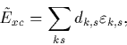

An equivalent set of exchange-correlation terms have been derived for the spin polarised case. Since all of the calculations performed in this thesis are spin averaged I will not describe the methodology here but list the relevant equations for completeness.
|  | (30) |
where